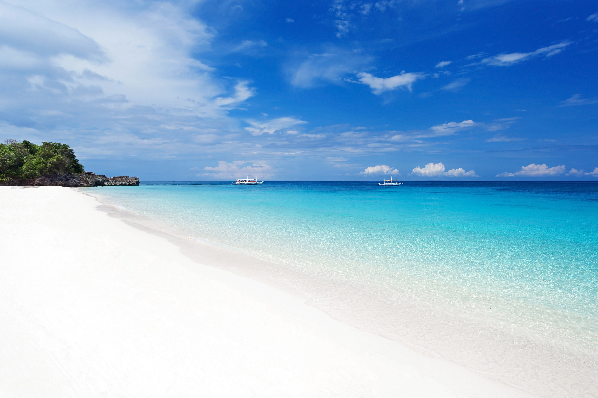

| Home | Boracay | Siargao | Puerto Princesa | Sagada | Banaue | Palawan |
|---|
 |
 |
|  |
Domestic and foreign tourists can once again explore Boracay's clear waters and gorgeous stretches of white sand. But with the threat of the COVID-19 pandemic, the Inter-Agency Task Force on Emerging Infectious Diseases (IATF-EID) has released a set of guidelines and tourist requirements to follow and consider before you jump at the chance to book that ticket to Boracay.
1. Who are allowed to go to Boracay?
Fully vaccinated domestic and foreign tourists, or those who have received their last dose of a COVID-19 vaccine at least two weeks prior to their travel, do not need to present a negative COVID-19 test result. They must instead present a vaccination certificate from vaxcert.doh.gov.ph or a locally issued vaccination card with a QR code or contact details of the vaccination center. Those vaccinated abroad can show an International Certificate of Vaccination (ICV) from the World Health Organization or a vaccination certificate issued abroad to prove their fully vaccinated status. Those who are unvaccinated or partially vaccinated need to present a negative RT-PCR test taken within 72 hours prior to travel.
All travelers also need to present a valid ID that shows your Philippine residency (or a passport for foreigners and OFWs), roundtrip tickets, a confirmed booking with any of the DOT-accredited hotels and resorts in Boracay, and a screenshot of the OHDC confirmation page that you can get by registering via touristboracay.com.
For those traveling with children below 12 years old, a filled out Certificate of Undertaking Traveling with Minors from aklan.gov.ph is also required.
2. What are the entry points in Boracay?
Godofredo Ramos Airport also known as Caticlan Airport is the only port of entry for tourists traveling by land, air, or sea. The IATF has implemented a “one entrance, one exit” policy, making it easier to monitor the number of visitors currently on the island, especially now that there is a daily tourist cap in place.
Travelers arriving at Caticlan Jetty Port and Tabon Port Terminal should also expect strict monitoring as each port is mandated to have health declaration stations, body temperature checks, hand sanitation, staff in protective gear, and physical distancing.
3. What travel requirements do you need to prepare?
Here are the requirements that you need to prepare before going to Boracay:
Get a Vaccination Certificate or Card (for Fully Vaccinated)
Fully vaccinated individuals are exempted from presenting a negative COVID-19 RT-PCR test result and should instead present a vaccination certificate generated from vaxcert.doh.gov.ph. A vaccination card with a QR code or a vaccination certificate issued by the LGU of where the traveler got vaccinated will also suffice. If you were vaccinated outside the Philippines, a vaccination certificate or card issued abroad is also accepted, as well as an International Certificate of Vaccination (ICV) from the World Health Organization.
Secure a negative RT-PCR test result (For Unvaccinated or Partially Vaccinated)
Unvaccinated and partially vaccinated travelers must secure a negative Reverse Transcription-Polymerase Chain Reaction (RT-PCR) test result taken not earlier than 72 hours prior to travel, so plan accordingly. Guests can also present a negative saliva RT-PCR test result as an alternative.
4. What are the guidelines and protocols to follow when you're in Boracay?
Once you're in Boracay, make sure you follow these safety protocols:
Tourist QR code
Visitors should always have a copy of their QR code on their person, whether through their smartphone or a printed physical copy. This will be used to enter establishments like Boracay hotels, restaurants, and other facilities for contact tracing.
Minimum health standards
Tourists are required to wear face masks and practice social distancing, in addition to frequent and proper handwashing.
Transport protocols
Vehicles have a “no mask, no boarding” policy and can only allow a maximum of two (2) passengers on tricycles and a maximum of four passengers on e-trikes.
Passengers exhibiting flu-like symptoms will be immediately transported to the nearest health facility. Drivers are provided with proper safety gear and the needed sanitization tools to disinfect the vehicle after every ride.
Dining protocols
Customers dining in have to log down details for contact tracing. Restaurants should have temperature checks, practice social distancing, and other sanitizing products. Self-service stations are barred from operating.
5. What activities can you do in Boracay during quarantine?
Don't miss the opportunity to enjoy the tourist spots of Boracay, but make sure to take note of the following protocols:
Swimming - with registration
Tourists have to register before swimming. There are designated beach stations where you can get your temperature checked before you go into the water. Areas are marked with red and yellow flags and you’re allowed to swim from 6 am to 6 pm.
Water sports - reduced capacity
Water sports or White Beach activities such as parasailing, kitesurfing, and more are permitted but at a reduced capacity.
Dining - with protocols
Restaurants are open for dine-in and take-out. Contactless payment is encouraged to lessen possible transmission
Best Time to Go to Boracay
If you are going to Boracay for some relaxing, island-hopping, or water activities, you should take note of the climate, weather, and temperature during your target travel dates before booking your plane ticket. This is to avoid canceled plans and to lessen the hassle usually caused by unexpected rains and thunderstorms.
In this section, you'll be able to know the best time of the year to visit Boracay. Also, the annual celebration on the island, as well as what to wear during your stay.